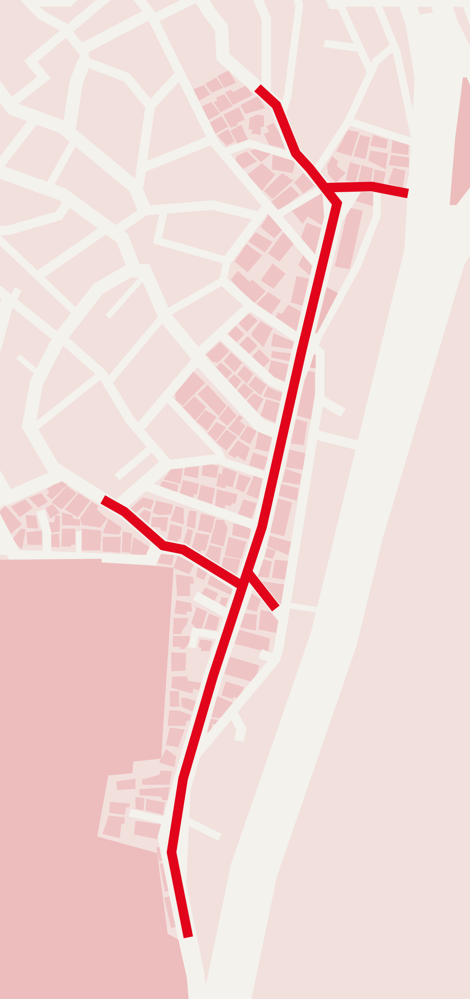

01
성광대도
02
베제투스
03
치맥라이프
04
미암미암
05
카사블랑카
06
타코스탠드
07
보니스피자펍
08
피자오
09
벽화
펄치 서울
코타티
소셜해이븐
해방촌 칵테일바 지니펍
모로코코 카페
려인 식당
빌라드블루 해방촌
춈
한신옹기
코카-콜라 X 해방촌
신흥로를 따라
해방촌을 걷다
처음으로
프로젝트 소개
신흥시장 지도
→
해방촌 지도
지금 보는 지도
* 각 가게의 이야기를 확인한 후, 화면을 왼쪽으로 넘기면 해방촌 벽화 이야기로 이어집니다.
숫자를 누르면 가게 이야기가 열려요